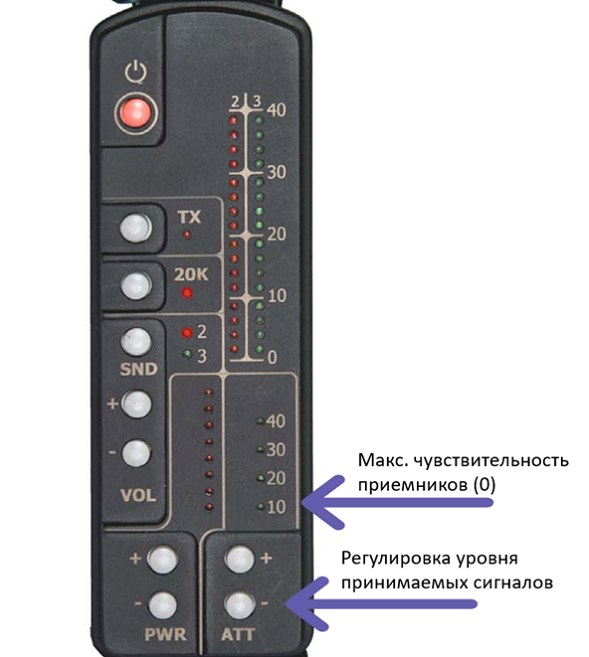

Подготовка к работе
5. Кнопкой “ATT –“ установить максимальную чувствительность приемников.
6. Направляя антенную систему в разные стороны и подключая кнопкой SND головные телефоны к выходам приемников второй и третьей гармоник частоты зондирующего сигнала, оценить помеховую обстановку на частотах приема. При наличии помех установить такое направление антенны, при котором сигнал помехи в головных телефонах не прослушивается.
Далее
